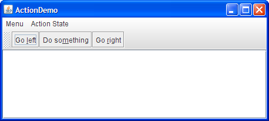
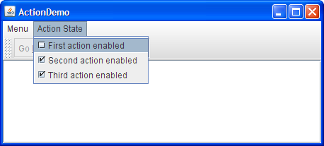
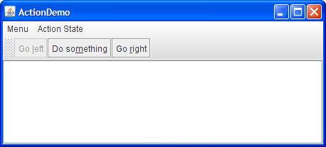

An
Actioncan be used to separate functionality and state from a component. For example, if you have two or more components that perform the same function, consider using anActionobject to implement the function. AnActionobject is an action listener that provides not only action-event handling, but also centralized handling of the state of action-event-firing components such as tool bar buttons, menu items, common buttons, and text fields. The state that an action can handle includes text, icon, mnemonic, enabled, and selected status.You typically attach an action to a component using the
setActionmethod. Here's what happens whensetActionis invoked on a component:
- The component's state is updated to match the state of the
Action. For example, if theAction's text and icon values were set, the component's text and icon are set to those values.- The
Actionobject is registered as an action listener on the component.- If the state of the
Actionchanges, the component's state is updated to match theAction. For example, if you change the enabled status of the action, all components it's attached to change their enabled states to match the action.Here's an example of creating a tool-bar button and menu item that perform the same function:
Action leftAction = new LeftAction(); //LeftAction code is shown later ... button = new JButton(leftAction) ... menuItem = new JMenuItem(leftAction);To create an
Actionobject, you generally create a subclass ofAbstractActionand then instantiate it. In your subclass, you must implement theactionPerformedmethod to react appropriately when the action event occurs. Here's an example of creating and instantiating anAbstractActionsubclass:leftAction = new LeftAction("Go left", anIcon, "This is the left button.", new Integer(KeyEvent.VK_L)); ... class LeftAction extends AbstractAction { public LeftAction(String text, ImageIcon icon, String desc, Integer mnemonic) { super(text, icon); putValue(SHORT_DESCRIPTION, desc); putValue(MNEMONIC_KEY, mnemonic); } public void actionPerformed(ActionEvent e) { displayResult("Action for first button/menu item", e); } }When the action created by the preceding code is attached to a button and a menu item, the button and menu item display the text and icon associated with the action. The
Lcharacter is used for mnemonics on the button and menu item, and their tool-tip text is set to theSHORT_DESCRIPTIONstring followed by a representation of the mnemonic key.For example, we have provided a simple example,
ActionDemo.java, which defines three actions. Each action is attached to a button and a menu item. Thanks to the mnemonic values set for each button's action, the key sequenceAlt-Lactivates the left button,Alt-Mthe middle button, andAlt-Rthe right button. The tool tip for the left button displays This is the left button. Alt-L. All of this configuration occurs automatically, without the program making explicit calls to set the mnemonic or tool-tip text. As we'll show later, the program does make calls to set the button text, but only to avoid using the values already set by the actions.
 Here is what the user sees when the "Go left" action is disabled:
Try this:
Click the Launch button to run ActionDemo using Java™ Web Start (download JDK 6). Or, to compile and run the example yourself, consult the example index.

Choose the top item from the left menu (Menu > Go left).
The text area displays some text identifying both the event source and the action listener that received the event.Click the leftmost button in the tool bar.
The text area again displays information about the event. Note that although the source of the events is different, both events were detected by the same action listener: theActionobject attached to the components.Choose the top item from the Action State menu.
This disables the "Go left"Actionobject, which in turn disables its associated menu item and button.
  Here's the code that disables the "Go left" action:
After you create components using anboolean selected = ...//true if the action should be enabled; //false, otherwise leftAction.setEnabled(selected);Action, you might well need to customize them. For example, you might want to customize the appearance of one of the components by adding or deleting the icon or text. For example,ActionDemo.javahas no icons in its menus, and no text in its buttons. Here's the code that accomplishes this:menuItem = new JMenuItem(); menuItem.setAction(leftAction); menuItem.setIcon(null); //arbitrarily chose not to use icon in menu ... button = new JButton(); button.setAction(leftAction); button.setText(""); //an icon-only buttonWe chose to create an icon-only button and a text-only menu item from the same action by setting the icon property to
nulland the text to an empty string. However, if a property of theActionchanges, the widget may try to reset the icon and text from theActionagain.
The Action API
The following tables list the commonly usedActionconstructors and methods. The API for usingActionobjects falls into three categories:
Components that Support set/getAction Class Purpose AbstractButton
JComboBox
JTextFieldThese components and their subclasses may have an action directly assigned to them via setAction. For further information about components that are often associated with actions, see the sections on tool bar buttons, menu items, common buttons, and text fields. For details on which properties each component takes from theAction, see the API documentation for the relevant class'sconfigurePropertiesFromActionmethod. Also refer to thebuttonActionstable.
Creating and Using an AbstractAction Constructor or Method Purpose AbstractAction()
AbstractAction(String)
AbstractAction(String, Icon)Create an Actionobject. Through arguments, you can specify the text and icon to be used in the components that the action is attached to.void setEnabled(boolean)
boolean isEnabled()Set or get whether the components the action controls are enabled. Invoking setEnabled(false)disables all the components that the action controls. Similarly, invokingsetEnabled(true)enables the action's components.void putValue(String, Object)
Object getValue(String)Set or get an object associated with a specified key. Used for setting and getting properties associated with an action.
This table defines the properties that can be set on an action. The second column lists which components automatically use the properties (and what method is specifically called). For example, setting the
ACCELERATOR_KEYon an action that is then attached to a menu item, means thatJMenuItem.setAccelerator(KeyStroke)is called automatically.
Property Auto-Applied to:
Class
(Method Called)Purpose ACCELERATOR_KEY JMenuItem
(setAccelerator)The KeyStroketo be used as the accelerator for the action. For a discussion of accelerators versus mnemonics, see Enabling Keyboard Operation. Introduced in 1.3.ACTION_COMMAND_KEY AbstractButton,JCheckBox,JRadioButton
(setActionCommand)The command string associated with the ActionEvent.LONG_DESCRIPTION None The longer description for the action. Can be used for context-sensitive help. MNEMONIC_KEY AbstractButton,JMenuItem,JCheckBox,JRadioButton
(setMnemonic)The mnemonic for the action. For a discussion of accelerators versus mnemonics, see Enabling Keyboard Operation. Introduced in 1.3. NAME AbstractButton,JMenuItem,JCheckBox,JRadioButton
(setText)The name of the action. You can set this property when creating the action using the AbstractAction(String)orAbstractAction(String, Icon)constructors.SHORT_DESCRIPTION AbstractButton,JCheckBox,JRadioButton
(setToolTipText)The short description of the action. SMALL_ICON AbstractButton,JMenuItem
(setIcon)The icon for the action used in the tool bar or on a button. You can set this property when creating the action using the AbstractAction(name, icon)constructor.
Examples that Use Actions
The following examples useActionobjects.
Example Where Described Notes ActionDemoThis section Uses actions to bind buttons and menu items to the same function. TextComponentDemoText Component Features Uses text actions to create menu items for text editing commands, such as cut, copy, and paste, and to bind key strokes to caret movement. Also implements custom AbstractActionsubclasses to implement undo and redo. The text action discussion begins in Concepts: About Editor Kits.